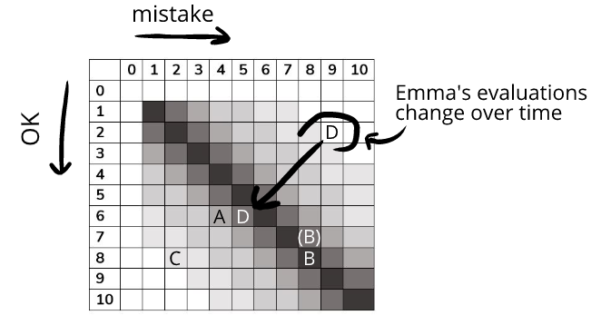

Our actual experiences are much more nuanced than having just “small” or “large” mistakes and OK. We can better represent this by adding more sizes to our chart:
|
no mistake |
small mistake |
medium mistake |
large mistake |
|
|
not OK |
none |
none |
none |
none |
|
small OK |
none |
high |
medium |
low |
|
medium OK |
none |
medium |
high |
medium |
|
large OK |
none |
low |
medium |
high |
We can continue subdividing this table into smaller and smaller increments. But no matter how many increments we use, humor is felt most intensely the closer the sizes of mistakes and OKs are to 1:1.
We can turn this into a quantification metaphor by using a 1-10 scale for the size of mistakes and OKs. This lets us chart humor:
We can notate our previous examples and place them on this chart:
Size 4 mistake and size 6 OK
Size 8 mistake and size 8/7 OK

In the example above, Emma and Zoe both felt high intensity humor. But while Emma felt a 1:1 ratio of mistake to OK, Zoe also felt some embarrassment too—her evaluations were a bit tilted toward the mistake corner at an 8:7 ratio of mistake to OK.
Size 2 mistake and size 9 OK
Size 9 mistake and size 2 OK
Emma’s evaluations change when Jennifer texted her. We can plot this change in evaluations by showing Emma’s evaluations going from 9:2 to 5:6:
The numbers in these examples are arbitrary—there aren’t actually units of mistakes and OKs. Instead, we're using a quantification metaphor to help us see some of the coherence to humor's intensity.